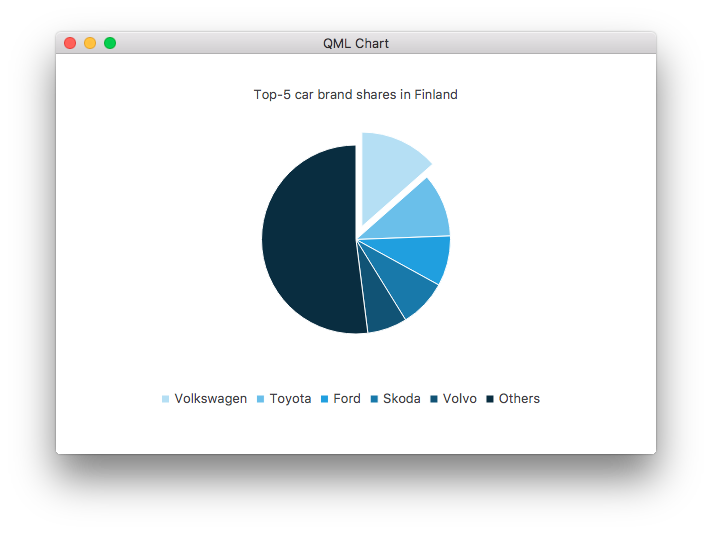

PieSeries QML Type
Presents data in pie charts. More...
| Import Statement: | import QtCharts 2.7 |
| Instantiates: | QPieSeries |
| Inherits: |
Properties
- count : int
- endAngle : real
- holeSize : real
- horizontalPosition : real
- size : real
- startAngle : real
- sum : real
- verticalPosition : real
Signals
- added(list<PieSlice> slices)
- clicked(PieSlice slice)
- doubleClicked(PieSlice slice)
- hovered(PieSlice slice, bool state)
- pressed(PieSlice slice)
- released(PieSlice slice)
- removed(list<PieSlice> slices)
- sliceAdded(PieSlice slice)
- sliceRemoved(PieSlice slice)
Methods
- PieSlice append(string label, real value)
- PieSlice at(int index)
- clear()
- PieSlice find(string label)
- bool remove(PieSlice slice)
Detailed Description
A pie series consists of slices that are defined using the PieSlice type. The slices can have any values as the PieSeries type calculates the percentage of a slice compared with the sum of all slices in the series to determine the actual size of the slice in the chart.
Pie size and position on the chart are controlled by using relative values that range from 0.0 to 1.0. These relate to the actual chart rectangle.
By default, the pie is defined as a full pie. A partial pie can be created by setting a starting angle and angle span for the series. A full pie is 360 degrees, where 0 is at 12 a'clock.
The following QML example shows how to create a simple pie chart.
ChartView { id: chart title: "Top-5 car brand shares in Finland" anchors.fill: parent legend.alignment: Qt.AlignBottom antialiasing: true property variant othersSlice: 0 PieSeries { id: pieSeries PieSlice { label: "Volkswagen"; value: 13.5 } PieSlice { label: "Toyota"; value: 10.9 } PieSlice { label: "Ford"; value: 8.6 } PieSlice { label: "Skoda"; value: 8.2 } PieSlice { label: "Volvo"; value: 6.8 } } Component.onCompleted: { // You can also manipulate slices dynamically, like append a slice or set a slice exploded othersSlice = pieSeries.append("Others", 52.0); pieSeries.find("Volkswagen").exploded = true; } }

See also PieSlice and ChartView.
Property Documentation
count : int |
The number of slices in the series.
endAngle : real |
The ending angle of the pie.
A full pie is 360 degrees, where 0 degrees is at 12 a'clock.
The default value is 360.
holeSize : real |
The donut hole size.
The value is relative to the chart rectangle, so that:
- 0.0 is the minimum size (full pie drawn without a hole).
- 1.0 is the maximum size that can fit the chart (the donut has no width).
When setting this property, the size property is adjusted if necessary, to ensure that the hole size is not greater than the pie size.
The default value is 0.0.
horizontalPosition : real |
The horizontal position of the pie.
The value is relative to the chart rectangle, so that:
- 0.0 is the absolute left.
- 1.0 is the absolute right.
The default value is 0.5 (center).
See also verticalPosition.
size : real |
The pie size.
The value is relative to the chart rectangle, so that:
- 0.0 is the minimum size (pie not drawn).
- 1.0 is the maximum size that can fit the chart.
When setting this property, the holeSize property is adjusted if necessary, to ensure that the hole size is not greater than the pie size.
The default value is 0.7.
startAngle : real |
The starting angle of the pie.
A full pie is 360 degrees, where 0 degrees is at 12 a'clock.
The default value is 0.
sum : real |
The sum of all slices.
The series keeps track of the sum of all the slices it holds.
verticalPosition : real |
The vertical position of the pie.
The value is relative to the chart rectangle, so that:
- 0.0 is the absolute top.
- 1.0 is the absolute bottom.
The default value is 0.5 (center).
See also horizontalPosition.
Signal Documentation
This signal is emitted when the slices specified by slices are added to the series.
The corresponding signal handler is onAdded.
Note: The corresponding handler is onAdded.
clicked(PieSlice slice) |
This signal is emitted when the slice specified by slice is clicked.
The corresponding signal handler is onClicked.
Note: The corresponding handler is onClicked.
doubleClicked(PieSlice slice) |
This signal is emitted when the slice specified by slice is double-clicked.
The corresponding signal handler is onDoubleClicked.
Note: The corresponding handler is onDoubleClicked.
This signal is emitted when a mouse is hovered over the slice specified by slice. When the mouse moves over the slice, state turns true, and when the mouse moves away again, it turns false.
The corresponding signal handler is onHovered.
Note: The corresponding handler is onHovered.
pressed(PieSlice slice) |
This signal is emitted when the user clicks the slice specified by slice and holds down the mouse button.
The corresponding signal handler is onPressed.
Note: The corresponding handler is onPressed.
released(PieSlice slice) |
This signal is emitted when the user releases the mouse press on the slice specified by slice.
The corresponding signal handler is onReleased.
Note: The corresponding handler is onReleased.
This signal is emitted when the slices specified by slices are removed from the series.
The corresponding signal handler is onRemoved.
Note: The corresponding handler is onRemoved.
sliceAdded(PieSlice slice) |
This signal is emitted when the slice specified by slice is added to the series.
The corresponding signal handler is onSliceAdded.
Note: The corresponding handler is onSliceAdded.
sliceRemoved(PieSlice slice) |
This signal is emitted when the slice specified by slice is removed from the series.
The corresponding signal handler is onSliceRemoved.
Note: The corresponding handler is onSliceRemoved.
Method Documentation
Adds a new slice with the label label and the value value to the pie.
Returns the slice at the position specified by index. Returns null if the index is not valid.
clear() |
Removes all slices from the pie.
Returns the first slice that has the label label. Returns null if the label is not found.
Removes the slice specified by slice from the pie. Returns true if the removal was successful, false otherwise.